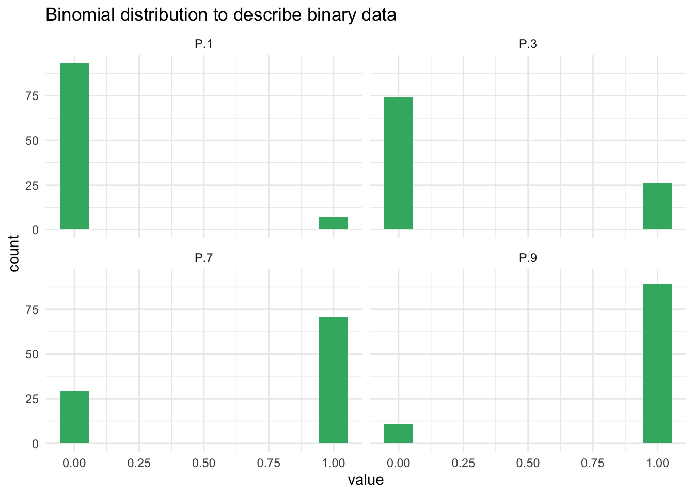
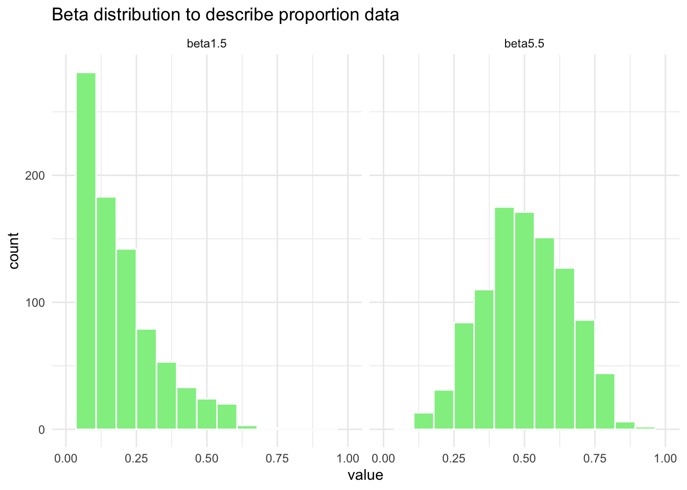
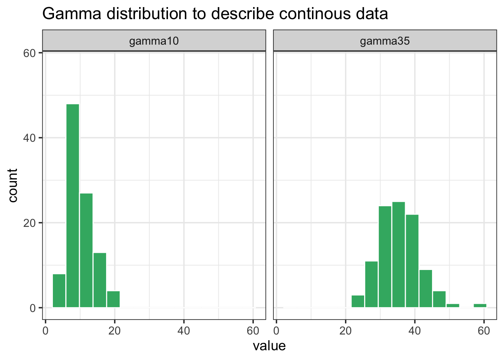

library(tidyverse)
theme_set(theme_bw(base_size = 14)) # set global theme
set.seed(123) # for reproducibility
P.1 <- rbinom(100, size = 1, prob = 0.1)
P.3 <- rbinom(100, size = 1, prob = 0.3)
P.7 <- rbinom(100, size = 1, prob = 0.7)
P.9 <- rbinom(100, size = 1, prob = 0.9)
binomial_data <- data.frame(P.1, P.3, P.7, P.9)1 Epidemic data
This is a work in progress that is currently undergoing heavy technical editing and copy-editing
1.1 Introduction
Studies on the progress of epidemics in time or their spread in space cannot be conducted without data collected in the field - or in same cases simulated. The study of plant disease quantification is known as Phytopathometry, a branch of plant pathology tasked with the science of disease measurement, but which has strong roots in epidemiology (Bock et al. 2021). Historically, disease quantification has been performed visually, but advances in both imaging and remote sensing technologies have directly impacted the field during the last several decades. Therefore, the quantity of disease can be obtained via estimation (visually by human eye) or measurement (sensor or digital technologies). This means that several variables can be used to express disease occurrence and quantity.
While measuring disease is a a more objective task, visual assessment is largely subjective and, as such, known to vary among human raters. This occurs because raters vary in their inherent abilities, training, or are more or less affected by the chosen method (e.g. scales). Disease is estimated or measured on a specimen in a population, or on a sample of specimens drawn from a population. The specimen can be a plant organ, an individual plant, a group of plants, a field or a farm, and these also dictate how terms are defined to refer to disease quantity.
Finally, when developing new or improving existing disease assessment methods, it is important to assess how close the estimations or measurements are from reference (gold standard) values. There are several methods that can be used to assess reliability, precision and accuracy of estimates or measures. The choice depends on the objective of the work but largely on the type or nature of the data, as it will be discussed further.
1.2 Terminology
A general term used to refer to the quantity of disease expressed by any means is disease intensity. This term has little or no practical value as it only suggest that the disease is more or less “intense”, but there is no scale for intensity. We need more specific terms to refer to disease quantity. A primary task in disease assessment is to classify each specimen, usually in a sample or in the population, as diseased or not diseased. This binary (yes/no) assessment may be sufficient to express disease intensity if the goal is to assess, for example, the number or proportion of diseased specimens in a sample or a population of specimens.
The above leads to two terms: disease incidence and prevalence. While incidence is commonly used to refer to the proportion or number (count) of plants (or their organs) as the observational units at the field scale or below, prevalence is used when referring to the proportion or number of fields or farms with diseased plants in a large production area or region (Nutter et al. 2006). Hence, prevalence is equivalent to incidence, only differing in the spatial scale of the sampling unit.
In many cases we need to ascertain the degree to which a specimen is diseased, which is a definition of disease severity. Elsewhere, severity is defined restrictively as the proportion of the unit that is symptomatic (Nutter et al. 2006). However, a broader view of severity encompasses other metrics including lesion counts and scores based on ordinal scales. These latter scales can be further divided into classes defined based on either the percentage scale or descriptions of symptoms (Bock et al. 2021). In some cases disease is expressed in terms of (average) lesion size or area, which can be considered a measure of severity. It is commonly used to determine host resistance, pathogen aggressiveness or environmental influence.
1.3 Data types and distributions
The data used to express disease as incidence or any kind of severity measures vary in their nature as they can be discrete or continuous.
Discrete variables are countable (involve integers) at a finite amount of time. That is, only a limited number of values (nominal or ordinal) is possible and these cannot be subdivided into parts. For example, a plant or plant part can be either disease or not diseased (nominal data). We cannot count 1.5 diseased plants. Also, a plant classified as diseased may exhibit a certain number of lesions (count data) or be classified into a specific class of severity (ordinal data, common in ordinal scales, e.g. 1-9). Disease data in the form of counts usually relate to the number of infections per sampling units. Most commonly, counts refer to the pathogen population that is assessed, such as number of airborne or soilborne propagules.
A continuous variable, different from discrete, can be measured on a scale and can have any numeric value between two numbers. For example, the size of a lesion on a plant can be measured at a very precise scale (cm or mm). An estimate of severity in percent scale (% diseased area) can take any value between non zero and 100%. Although discrete at the individual level, incidence at the sample level can be treated as continuous, as it can take any value in proportion or percentage.
The disease variables can also be described by a statistical distribution, which are models that give the probability that a particular value (or a range of values) will be drawn from a specific distribution. Knowledge about statistical or mathematical distributions constitute an important step to improve our understanding of data-collection methods, designs of experiments and data analysis such as data summarization or hypothesis testing.
1.3.1 Binomial distribution
For incidence (and prevalence), the data is binary at the individual level, as there are only two possible outcomes in a trial: the plant or plant part is disease or not diseased. The statistical distribution that best describe the incidence data at the individual level is the binomial distribution.
Let’s simulate the binomial outcomes for a range of probabilities in a sample of 100 units, using the rbinom function in R. For a single trial (e.g. status of plants in a single plant row), the size argument is set to 1.
We can then visualize the plots.
binomial_data |>
pivot_longer(1:4, names_to = "P",
values_to = "value") |>
ggplot(aes(value))+
geom_histogram(fill = "MediumSeaGreen",
bins =10)+
facet_wrap(~P)+
labs(title = "Binomial distribution to describe binary data")
1.3.2 Beta distribution
Disease incidence (or prevalence) at the sample or population level can be expressed as proportion of diseased individuals. The same applies to disease severity when expressed as proportion of the organ area affected (a ratio variable). For such cases, the beta distribution, which is bounded between 0 and 1, provides a good description. Let’s simulate some data using the rbeta function.
beta1.5 <- rbeta(n = 1000, shape1 = 1, shape2 = 5)
beta5.5 <- rbeta(n = 1000, shape1 = 5, shape2 = 5)
beta_data <- data.frame(beta1.5, beta5.5)Notice there are two shape parameters in the beta distribution: shape1 and shape2 to be defined. This makes the distribution very flexible and with several potential shapes as we can see below.
beta_data |>
pivot_longer(1:2, names_to = "P",
values_to = "value") |>
ggplot(aes(value))+
geom_histogram(fill = "MediumSeaGreen",
color = "white",
bins = 15)+
scale_x_continuous(limits = c(0,1))+
facet_wrap(~P)+
labs(title = "Beta distribution to describe proportion data")
1.3.3 Poisson distribution
The number of diseased plants, plant parts or individual symptoms (lesions) are discrete variables (integers) which cannot take negative values. These can be described by a Poisson distribution, a discrete distribution that counts the number of events in a Poisson process. In R, we can used the rpois function to obtain 100 random observations following a Poisson distribution. For such, we need to inform the number of observation (n = 100) and lambda which is the vector of means.
poisson5 <- rpois(100, lambda = 10)
poisson35 <- rpois(100, lambda = 35)
poisson_data <- data.frame(poisson5, poisson35)poisson_data |>
pivot_longer(1:2, names_to = "P",
values_to = "value") |>
ggplot(aes(value))+
geom_histogram(fill = "MediumSeaGreen",
color = "white",
bins = 15)+
facet_wrap(~P)+
labs(title = "Poisson distribution to describe count data")
1.3.4 Gamma distribution
When working with a continuous variables, such as lesion size, these random variables are usually described by the normal distribution. However, the problem is that the normal (Gaussian) distribution includes negative values, which is not realistic in our situation. Therefore, we can use the gamma distribution, which cannot take negative values, to simulate continuous plant disease data. We can use the rgamma function which requires the number of samples (n = 100 in our case) and the shape, which is the mean value.
gamma10 <- rgamma(n = 100, shape = 10, scale = 1)
gamma35 <- rgamma(n = 100, shape = 35, scale = 1)
gamma_data <- data.frame(gamma10, gamma35)gamma_data |>
pivot_longer(1:2, names_to = "P",
values_to = "value") |>
ggplot(aes(value))+
geom_histogram(fill = "MediumSeaGreen",
color = "white",
bins = 15)+
ylim(0, max(gamma_data$gamma35) )+
facet_wrap(~P)+
labs(title = "Gamma distribution to describe continous data")